Your buses, at a glance
A hello for the time of day, a line on how things look ("Sweet as, the 27H is on time"), and each direction with a live scene: the bus drives in as it counts down. Which bus it is, how full, how far away, and when to leave.

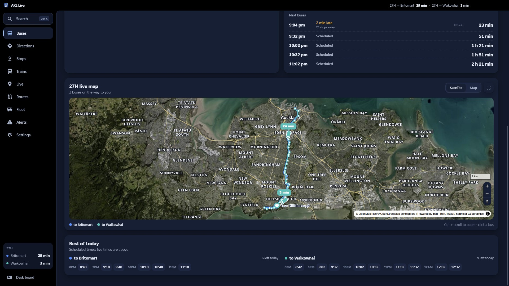

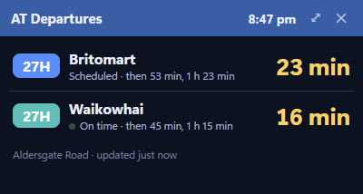
Directions, like AT's journey planner (but on your PC)
Plan any trip by bus, train and ferry. The router runs on your computer over AT's full timetable, with live delays, the actual bus that's coming, walking directions, reminders and calendar events.

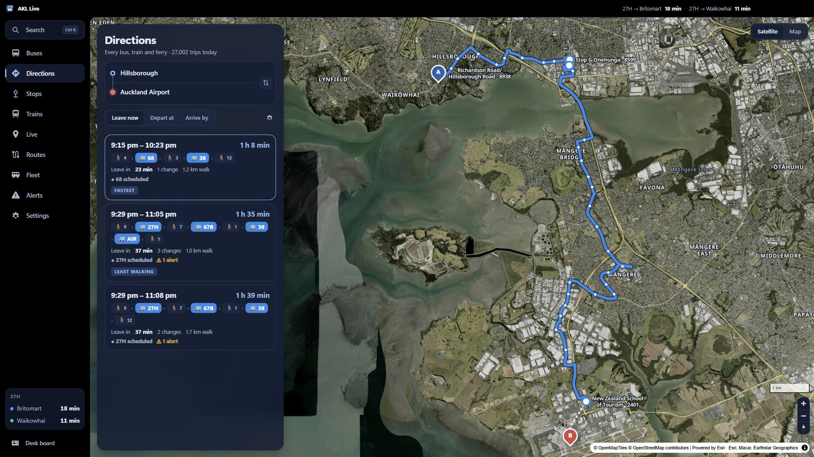

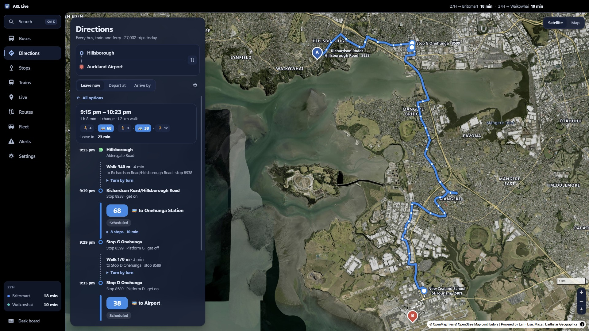
Ngā Tereina: the whole rail network, live
Drawn from the track shapes in AT's timetable, in AT's own line colours. Lines on the same rails run side by side; every train sits where its GPS puts it, pointing the way it's heading.

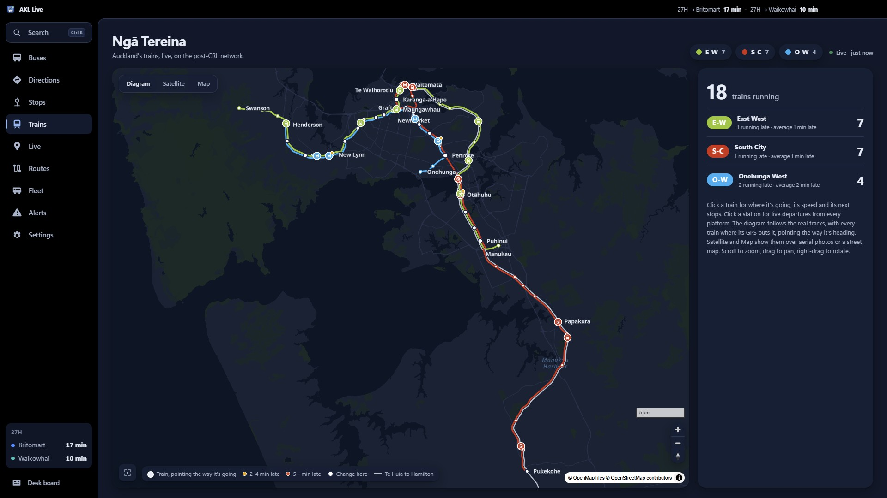

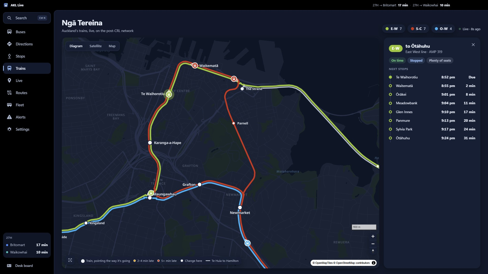
Every bus in Auckland, on one map
All 600+ buses at rush hour, coloured by operator, with filters for electric buses, double-deckers and operators. Click one for its route, next stops, speed, how full it is, and its model with a real photo.

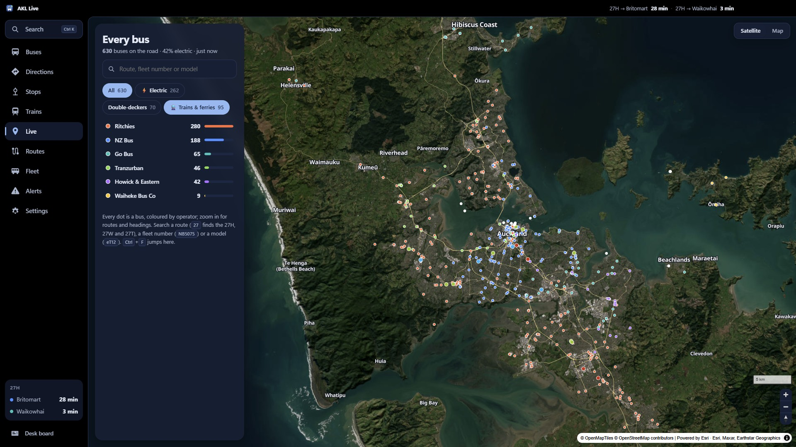

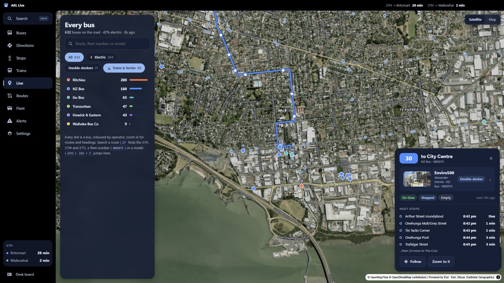

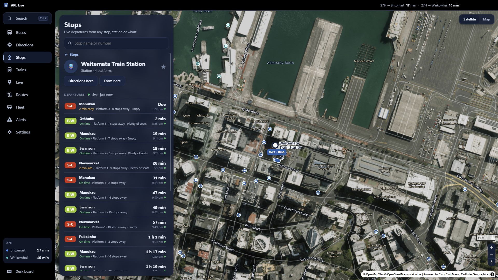

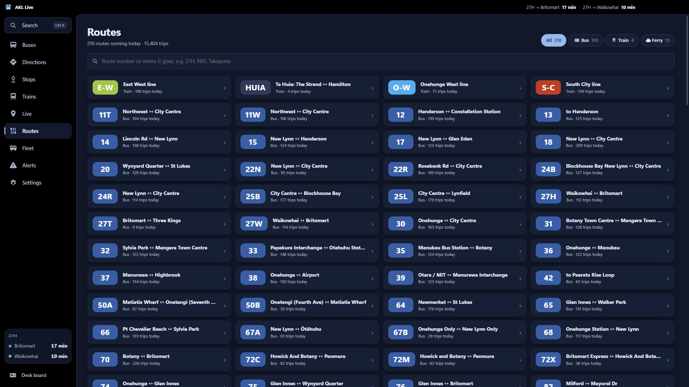
The fleet, with real photos
Every bus model on Auckland's roads, how many are out right now and where, with photos from the AT Metro Wiki. And a Fleet dex: a model counts once one pulls up at your stop.

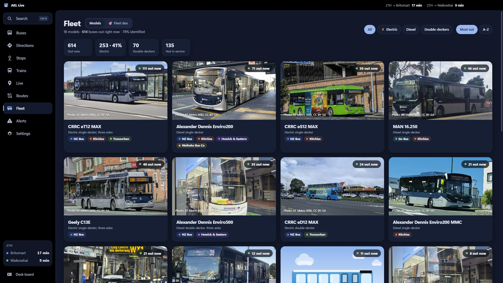

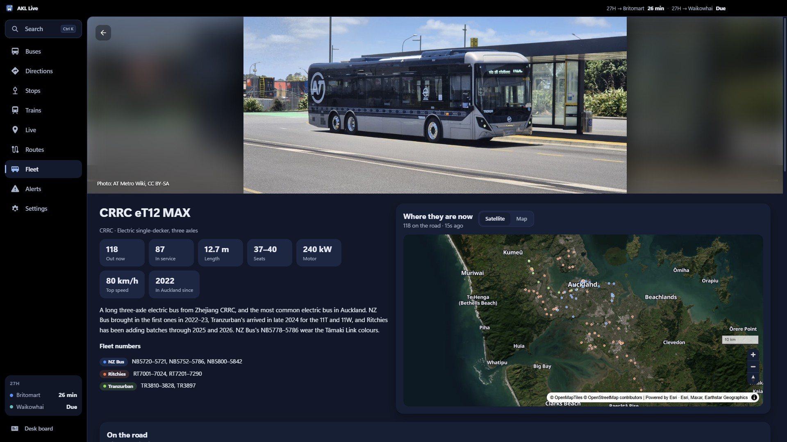

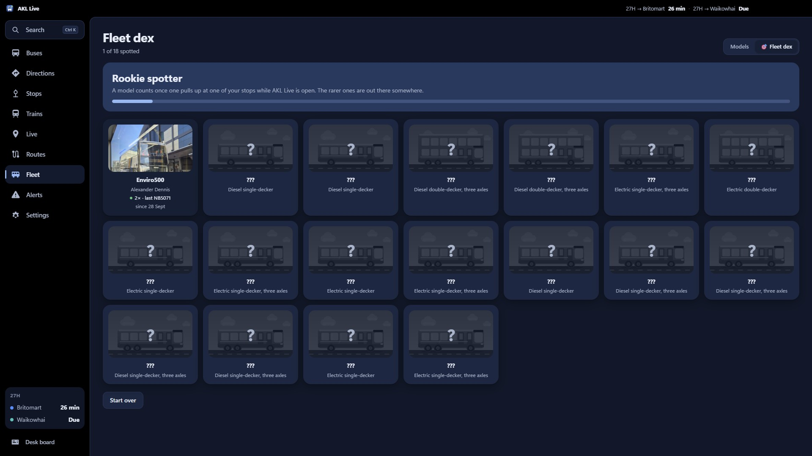

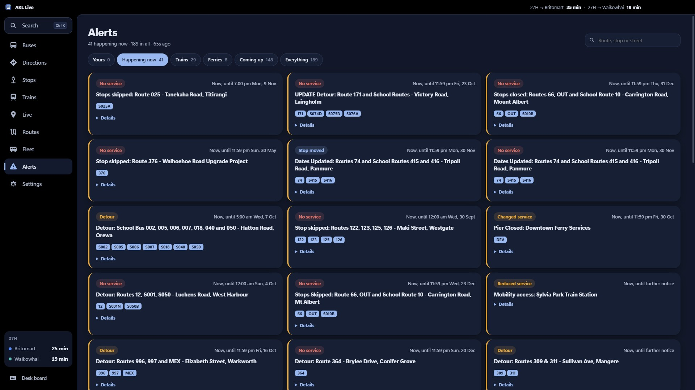
Made for Auckland
Six colour themes, each after something Auckland: Waitematā, Pōhutukawa, Kawakawa, Kōwhai, Rangitoto and Tūī. Light or dark, following Windows. Kiwi mode says Mōrena. Search everything with Ctrl+K.

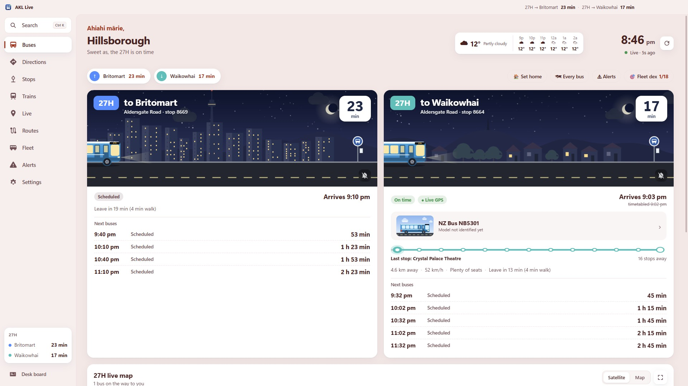

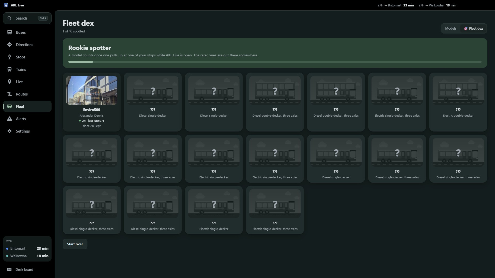

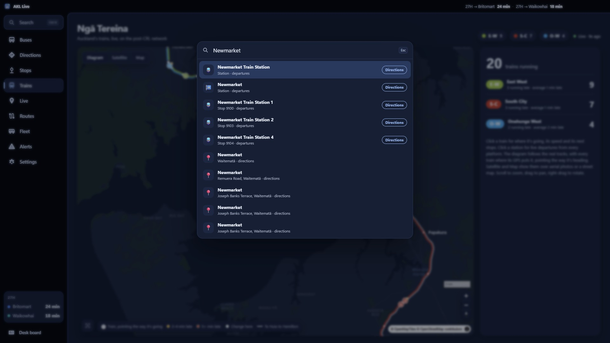

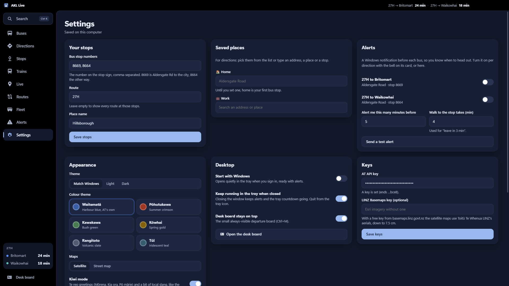
Get it
- Download AKL-Live-Setup from the latest release and run it. It installs just for you (no admin), with Start menu and desktop shortcuts. If Windows warns about an unknown app, choose More info → Run anyway.
- The first time it opens, it asks for your Auckland Transport API key. Sign up free at dev-portal.at.govt.nz, subscribe to AT's GTFS and real-time APIs, and paste your primary key in.
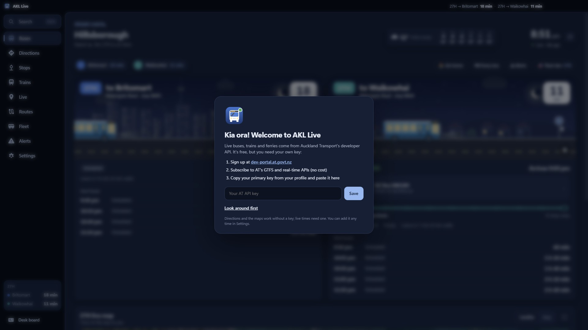